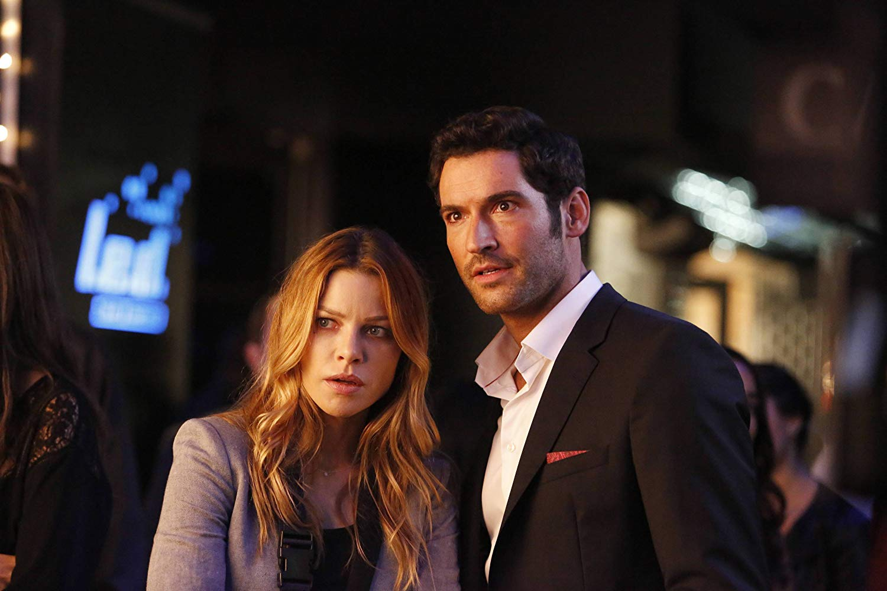

1.Évad
 Lucifer Morningstar, a pokol ura elhatározza hogy otthaggya a poklot és Los Angeles-be megy vakációra,
ahol egy jól menő éjszakai klubot vezet. Mikor belekeveredik egy gyilkossági ügybe, megismerkedik Chloe Deckerr-el,
a nyomozónővel, és segít neki megtalálni a tettest. Ezek után Csatlakozik az LAPD-hez mint segítő, mert megtetszett
neki a munka amit a rendőrök végeznek.
Lucifer Morningstar, a pokol ura elhatározza hogy otthaggya a poklot és Los Angeles-be megy vakációra,
ahol egy jól menő éjszakai klubot vezet. Mikor belekeveredik egy gyilkossági ügybe, megismerkedik Chloe Deckerr-el,
a nyomozónővel, és segít neki megtalálni a tettest. Ezek után Csatlakozik az LAPD-hez mint segítő, mert megtetszett
neki a munka amit a rendőrök végeznek.
Később rájön hogy a nyomozó különleges ember, mert nem tudja belőle kiszedni legfőbb
vágyát, mint a többi halandó embertől, illetve ha a közelében van,sebezhetővé válik, és meg is halhat emiatt.
Hogy Lucifer kiismerje az embereket, a földön, Lucifer Egy pszichiáter segítségét veszi igénybe, dr. Linda Martin-ét.
A földre érkezik még Amenadiel, Lucifer testvére aki vissza akarja őt vinni a pokolba, mert neki nincs helye a földön.
Az évad végén megölik Lucifert, de apja feltámasztja őt, és egy látomásban megmutatja neki, hogy valaki megszökött a pokolból.
Testvérével kibékül és neki is elmondja hogy aki kiszökött a pokolból az nem más mint az anyjuk.
